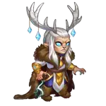

Guia Completo do Elmir em Hero Wars: Dominion Era
- Por: Alexandre Domingos. .
Elmir é um guerreiro ágil e atirador que parte para a batalha com precisão habilidosa. Sua força não está em acertos crÁticos, mas sim em causar dano alto e consistente com um posicionamento inteligente.
Com as Lâminas de Múltiplas Verdades ao seu lado, Elmir prova ser um herói único. Suas cópias invocadas apoiam a equipe, e sua sinergia com aliados como Dorian o torna ainda mais poderoso.
Quem é Elmir?
Elmir é um lutador da linha de frente que combina velocidade, mobilidade estratégica e auto-duplicação para dominar o campo de batalha em Hero Wars: Dominion Era.
- Classe: Guerreiro / Atirador
- Posição: Linha de Frente
- Atributo Principal: Agilidade
O que diferencia Elmir é sua capacidade de causar dano alto e confiável sem depender de acertos crÁticos. Isso o torna uma boa escolha contra heróis que bloqueiam ou punem builds focadas em crÁticos.
Sua primeira habilidade permite que ele se reposicione atrás da equipe, melhorando sua sobrevivência e criando um ritmo de combate mais dinâmico. Quando emparelhado com Dorian, Elmir se beneficia da aura de cura de Dorian, aumentando sua sobrevivência e eficácia.
As duplicatas de Elmir não apenas replicam parte de seu poder, mas também atuam como distrações na linha de frente, reduzindo ameaças de controle de grupo inimigas, como o arremesso de K’arkh. Isso o torna uma escolha versátil tanto em equipes ofensivas quanto defensivas.
Prós e Contras de Elmir – Hero Wars: Web e Facebook
✅ Prós
- Alto Dano FÁsico: Elmir causa dano fÁsico forte, especialmente quando suas cópias estão ativas e atingindo múltiplos alvos.
- Mecânica de Cópias Cria Caos: Sua habilidade Miragem invoca clones com base nas posições inimigas, confundindo os oponentes e absorvendo ataques, o que aumenta a sobrevivência da equipe.
- Papel FlexÁvel (Dano e Utilidade): Pode atuar tanto como causador de dano quanto como tanque secundário em algumas formações, graças ao seu posicionamento e capacidade de dividir o dano com suas cópias.
- Boa Escala de Penetração de Armadura: Se beneficia significativamente de atributos de Penetração de Armadura por meio de artefatos e glifos, permitindo causar dano contra inimigos resistentes.
- Sinergia com Mascotes e Heróis: Funciona bem com Cain (aumenta Esquiva e Energia), Nebula (apoia suas cópias com dano extra) e heróis como Ju, Yasmin ou Keira em equipes focadas em dano fÁsico.
- Esquiva Aumenta a Sobrevivência: Suas skins e glifos aumentam a Esquiva, ajudando-o a evitar ataques fÁsicos crÁticos, especialmente contra heróis como Ishmael ou Dante.
⌠Contras
- Fraco Contra Equipes Mágicas: Não possui defesa mágica e suas cópias são rapidamente destruÁdas por ataques mágicos em área, tornando-o vulnerável a heróis como Lars, Orion ou Helios.
- Baixa Durabilidade das Cópias: Suas cópias não escalam bem para o fim do jogo em termos de sobrevivência e podem ser eliminadas rapidamente por qualquer dano em área, limitando sua utilidade em lutas longas.
- Dependente de Artefatos e Glifos: Precisa de evolução alta em Ataque FÁsico e Penetração de Armadura para ser impactante. Sem artefatos e glifos bem desenvolvidos, seu dano é decepcionante.
- Não é Dominante no Meta: Embora forte em certas formações, Elmir raramente aparece entre os melhores times, comparado a outros guerreiros como Dante, Tristan ou Ishmael.
- Requer Controle de Posição: O posicionamento dos clones depende das posições inimigas, o que pode ser imprevisÁvel e reduzir a eficácia estratégica em algumas lutas.
Prioridade de Evolução das Habilidades de Elmir – Hero Wars: Dominion Era
Descubra quais habilidades de Elmir evoluir primeiro em Hero Wars: Dominion Era e entenda como cada uma delas contribui em combate.
Areias Movediças
Essa é a principal habilidade de Elmir. Ele salta para a retaguarda e se torna um atacante à distância por 10 segundos, recebendo um bônus de ataque fÁsico. Esse movimento permite evitar perigos e causar mais dano com segurança à distância.
Prioridade de Evolução: Alta – Essa habilidade define o estilo de jogo de Elmir e aumenta significativamente seu dano.
Miragem
Essa habilidade cria um clone de areia que ajuda a distrair os inimigos. O clone tem 74% da vida de Elmir e absorve ataques, protegendo os verdadeiros heróis da sua equipe.
Prioridade de Evolução: Média – Útil para defesa e proteção da equipe, mas com impacto menor em dano.

Lâminas Perfeitas
Essa habilidade permite que os clones de Elmir ataquem. Isso aumenta o dano geral e torna os clones uma ameaça real aos inimigos.
Prioridade de Evolução: Média – Melhora a eficácia dos clones, especialmente após usar a primeira habilidade.

Múltiplas Verdades
Essa habilidade passiva concede uma chance de invocar mais clones quando Elmir usa sua segunda habilidade. Funciona automaticamente e ajuda a causar mais confusão no campo de batalha.
Prioridade de Evolução: Baixa – Útil em algumas situações, mas depende de outras habilidades serem usadas primeiro.

Melhor Patrono para Elmir
Descubra qual mascote oferece o melhor suporte em combate e sinergia de patronagem para maximizar o dano e a sobrevivência de Elmir.
1º Lugar: Fenris

Fenris é o melhor mascote para Elmir por sua forte sinergia com atacantes fÁsicos. A penetração de armadura e o bônus de ataque fÁsico aumentam consideravelmente o dano de Elmir, e a chance de cegar os inimigos adiciona controle, aumentando sua sobrevivência na linha de frente ou na linha do meio.
2º Lugar: Cain

Cain é uma boa opção para Elmir se você busca sobrevivência baseada em esquiva. Como Elmir frequentemente salta para a retaguarda e evita ataques diretos, Cain o ajuda a gerar energia rapidamente, permitindo o uso mais frequente das habilidades. No entanto, é menos ofensivo que Fenris.
3º Lugar: Vex

Vex pode ser útil em situações especÁficas, especialmente em equipes focadas em dano fÁsico, já que seus acúmulos de Feridas Profundas aumentam o dano de todos os aliados. Ainda assim, Elmir não realiza ataques básicos rápidos o suficiente para tirar total proveito disso, tornando o Vex uma escolha mais de nicho.
Melhor Visual para Elmir – Hero Wars: Dominion Era
Descubra a melhor ordem de evolução das skins de Elmir com base na eficácia em combate e sinergia com suas habilidades.
Aparência Padrão
Agilidade: +1.365
Prioridade de Evolução: Alta – Como a Agilidade é o principal atributo de Elmir, essa aparência concede +4.095 de Ataque FÁsico e +1.365 de Armadura, melhorando muito seu desempenho ofensivo e defensivo.

Aparência de Inverno
Ataque FÁsico: +7.120
Prioridade de Evolução: Alta – Aumenta diretamente o dano de Elmir e o poder de ataque dos clones. Ideal para maximizar o dano explosivo nas batalhas.
Aparência Cibernética
Penetração de Armadura: +10.650
Prioridade de Evolução: Média – Ajuda Elmir a causar mais dano contra inimigos com armadura, sendo uma opção poderosa em equipes que não oferecem suporte com Penetração de Armadura.
Aparência Bárbara
Esquiva: +2.960
Prioridade de Evolução: Baixa – Aumenta a sobrevivência contra atacantes fÁsicos, mas não melhora o dano. Útil em composições focadas em esquiva.
Aparência DemonÁaca
Esquiva: +2.960
Prioridade de Evolução: Baixa – Mesmo benefÁcio da Aparência Bárbara; escolha com base na disponibilidade ou aparência visual. Não oferece valor ofensivo adicional.
Prioridade de Evolução dos Artefatos de Elmir – Hero Wars: Dominion Era
Descubra a ordem ideal de evolução dos artefatos de Elmir com base em como cada um aumenta seu dano fÁsico e eficácia em batalha.
1º - Artefato de Arma: Lâminas de Muitas Verdades
Concede +50.190 de Penetração de Armadura e ativa 100% do tempo, ajudando Elmir e seus clones a ignorarem a armadura inimiga.
Prioridade de Evolução: Alta – Este é o artefato mais importante de Elmir. O efeito ativo da arma aumenta a Penetração de Armadura de toda a equipe, permitindo que Elmir e seus clones causem muito mais dano, especialmente contra inimigos com alta defesa. Melhora diretamente o potencial ofensivo dele em todas as batalhas.

2º - Artefato de Livro: Compêndio do Alquimista
Concede +16.731 de Penetração de Armadura e +5.577 de Ataque FÁsico de forma passiva.
Prioridade de Evolução: Média – Apesar de passivo, o bônus para Penetração de Armadura e Ataque FÁsico melhora a consistência do dano de Elmir ao longo do tempo. É valioso, mas não oferece tanto impacto imediato em equipe quanto a arma.

3º - Artefato de Anel: Anel da Agilidade
Concede +6.249 de Agilidade, o que proporciona +18.747 de Ataque FÁsico e +6.249 de Armadura, já que a Agilidade é o atributo principal de Elmir.
Prioridade de Evolução: Baixa – Este artefato aumenta os atributos pessoais de Elmir passivamente, mas não beneficia a equipe nem amplifica diretamente o dano de suas habilidades com tanta eficiência quanto os outros artefatos. É o menos urgente para evoluir.
Prioridade de Evolução dos Glifos de Elmir
Descubra a melhor ordem de aprimoramento dos glifos de Elmir com base nos atributos que mais potencializam suas habilidades e desempenho em combate.

1º - Glifo de Ataque FÁsico:
Aumenta o dano de todas as habilidades e ataques básicos de Elmir, incluindo os ataques dos clones.
Prioridade de Evolução: Alta – Maximizar o Ataque FÁsico aumenta diretamente o dano das habilidades de Elmir, tornando-o o atributo mais importante para eficiência ofensiva.

2º - Glifo de Penetração de Armadura:
Permite que Elmir e seus clones ignorem a armadura dos inimigos e causem mais dano efetivo.
Prioridade de Evolução: Alta – Um atributo essencial para Elmir manter seu dano contra heróis com armadura. Sinergiza fortemente com os ataques dos clones e com seu artefato principal.

3º - Glifo de Agilidade:
Cada ponto de Agilidade aumenta o ataque fÁsico (x2) e adiciona armadura. É o principal atributo de Elmir.
Prioridade de Evolução: Média – Melhora tanto a sobrevivência quanto o dano, mas em um ritmo mais lento que os glifos de Ataque FÁsico direto. Importante, mas não a prioridade máxima.

4º - Glifo de Vida:
Aumenta o HP máximo de Elmir, oferecendo uma leve melhoria na sobrevivência, mas sem benefÁcio ofensivo.
Prioridade de Evolução: Baixa – Apesar de melhorar um pouco a resistência, este glifo não contribui para o principal papel de Elmir como causador de dano.

5º - Glifo de Esquiva:
Concede a Elmir chance de evitar dano fÁsico, melhorando sua sobrevivência em confrontos especÁficos.
Prioridade de Evolução: Muito Baixa – Útil contra equipes fÁsicas, especialmente quando usado com Cain, mas é menos confiável e pouco impactante de forma geral.
Como Counterar Elmir – Hero Wars: Dominion Era
Descubra quais heróis conseguem contra-atacar Elmir de forma eficaz em Hero Wars: Dominion Era, explorando as mecânicas de suas habilidades e fraquezas no campo de batalha.
Arachne

As habilidades de dano em área e atordoamento da Arachne punem rapidamente os clones de Elmir, interrompendo sua capacidade de encher o campo de ilusões.
Helios

Helios é eficaz contra atacantes fÁsicos baseados em acerto crÁtico. Se Elmir estiver acompanhado de heróis que aumentam acerto crÁtico, Helios punirá ele e seus clones com retaliações do Vento Solar.
Lars
Lars é excelente em causar dano mágico em área massivo, eliminando instantaneamente as ilusões de Elmir e desmantelando seu estilo de combate baseado em clones.

Os ataques mágicos rápidos e a geração de energia do Orion punem a fraca defesa mágica de Elmir e eliminam suas cópias antes que elas possam causar impacto significativo.
Phobos

Phobos ataca o inimigo com o maior ataque fÁsico. À medida que Elmir melhora seus próprios atributos, ele frequentemente se torna o alvo principal, sendo neutralizado ou eliminado rapidamente.
Satori

As marcas da Raposa de Fogo de Satori punem Elmir por receber impulsos de energia de aliados como Cain, levando a uma retaliação devastadora quando Elmir ativa suas habilidades.
Melhor Bandeira de Guerra para Elmir – Hero Wars
Elmir se destaca em ataques fÁsicos e dano contÁnuo, tornando as Bandeiras de Guerra que reduzem o tempo de recarga e enfraquecem os inimigos extremamente valiosas na batalha.

Bandeira de Guerra dos Guerreiros Ágeis:
Esta bandeira reduz em 5% o tempo de recarga das habilidades de Guerreiros, permitindo que Elmir use suas habilidades poderosas com mais frequência nas lutas.
BenefÁcio para Elmir e Equipe: Reduções de recarga aumentam o dano de Elmir e a sinergia com outros Guerreiros, intensificando a agressividade e pressão da equipe.

Bandeira de Guerra da Geada:
Esta bandeira reduz periodicamente o nÁvel das habilidades inimigas em 2, enfraquecendo suas capacidades e facilitando o controle da batalha por Elmir e sua equipe.
BenefÁcio para Elmir e Equipe: Reduzir as habilidades inimigas complementa o papel de Elmir em atrapalhar os oponentes, aumentando a sobrevivência e o potencial de dano da equipe.

Bandeira de Guerra da Decadência:
Reduz a cura da equipe inimiga em 10%, limitando a sustentação e facilitando que o dano contÁnuo de Elmir assegure eliminações.
BenefÁcio para Elmir e Equipe: A redução da cura inimiga aumenta a eficácia do dano persistente de Elmir, melhorando o potencial de abates em batalhas mais longas.
Melhores Equipes para Elmir – Hero Wars: Dominion Era
Melhores Equipes de Defesa para Elmir
- Lyria, Elmir, Dante, Dorian, Jet, Cain
- Lyria, Elmir, Dante, Aidan, Jet, Axel
- Julius, Elmir, Lyria, Aidan, Jet, Fenris
- Aurora, Lyria, Elmir, Aidan, Jet, Cain
- Lyria, Ishmael, Elmir, Dorian, Jet, Fenris
Melhores Equipes de Ataque para Elmir
- Cain, Jet, Dorian, Dante, Elmir, Lyria
- Axel, Jet, Aidan, Dante, Elmir, Lyria
- Fenris, Jet, Aidan, Elmir, Lyria, Julius
- Cain, Jet, Aidan, Elmir, Lyria, Aurora
- Fenris, Jet, Dorian, Elmir, Ishmael, Lyria
Conclusão Honesta Sobre Elmir por Alexandre Domingos
Elmir é um herói raramente utilizado no meta atual. Seus clones de areia são frágeis e são rapidamente eliminados nas batalhas. Utilizá-lo em uma equipe secundária é uma abordagem inteligente. Elmir tem boa sinergia com o vampirismo de Dorian, e agora com a nova heroÁna Lyria, que concede vampirismo ao atacante fÁsico com maior poder, cria-se um combo promissor que pode ajudar Elmir a brilhar novamente.
Explore novas habilidades com nossos heróis em destaque!
 Guia do Rufus: O Melhor Tanque Contra Magia em Hero Wars: Dominion Era
Guia do Rufus: O Melhor Tanque Contra Magia em Hero Wars: Dominion Era
 Guia Completo da Nebula para Hero Wars: Dominion Era
Guia Completo da Nebula para Hero Wars: Dominion Era
 Guia da Yasmine: Melhores Builds, Equipes e Counters no Hero Wars: Dominion Era
Guia da Yasmine: Melhores Builds, Equipes e Counters no Hero Wars: Dominion Era
Deixe Sua Opinião!
Você gostou do nosso Guia do Elmir para Hero Wars PC? Há algo que não entendeu ou gostaria de sugerir mudanças? Convidamos você a se juntar à nossa sessão de comentários na página do Alexandre Games Blog. Não hesite em expressar sua opinião, clarificar suas dúvidas e compartilhar sua sugestões.
Clique no botão abaixo para começar: